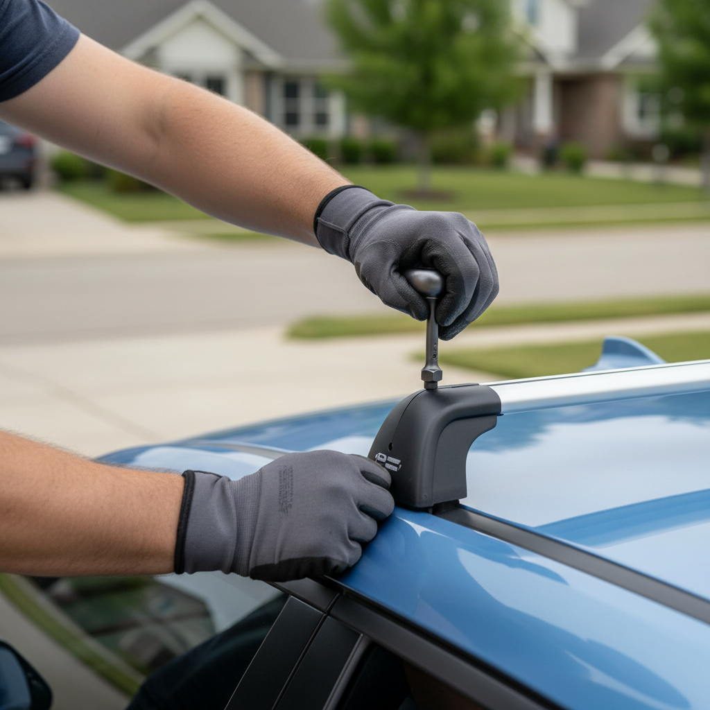
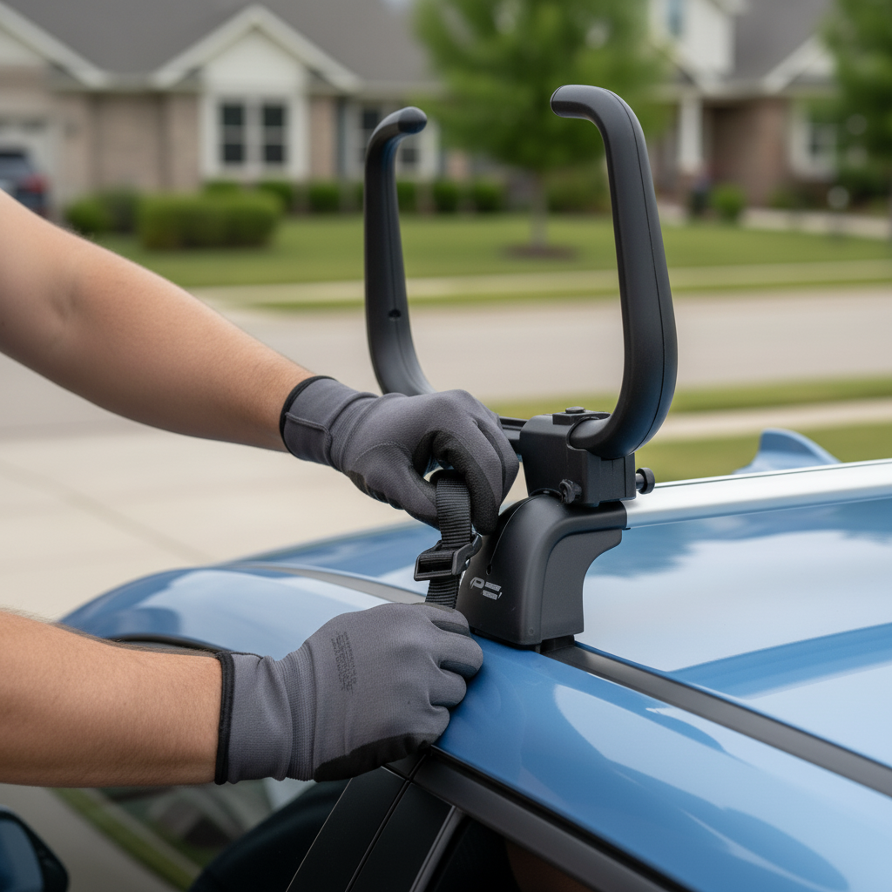
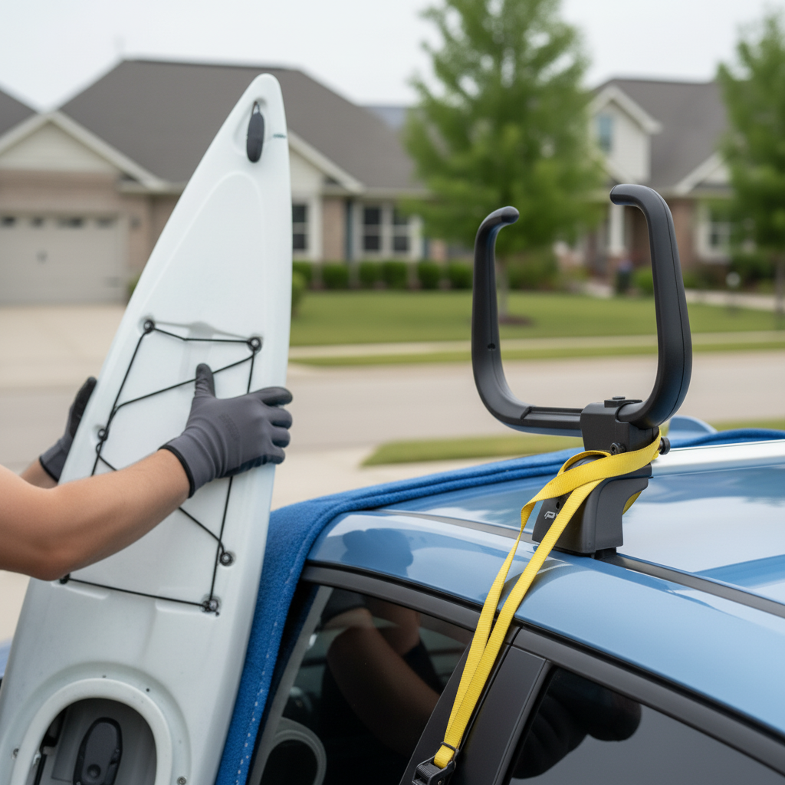
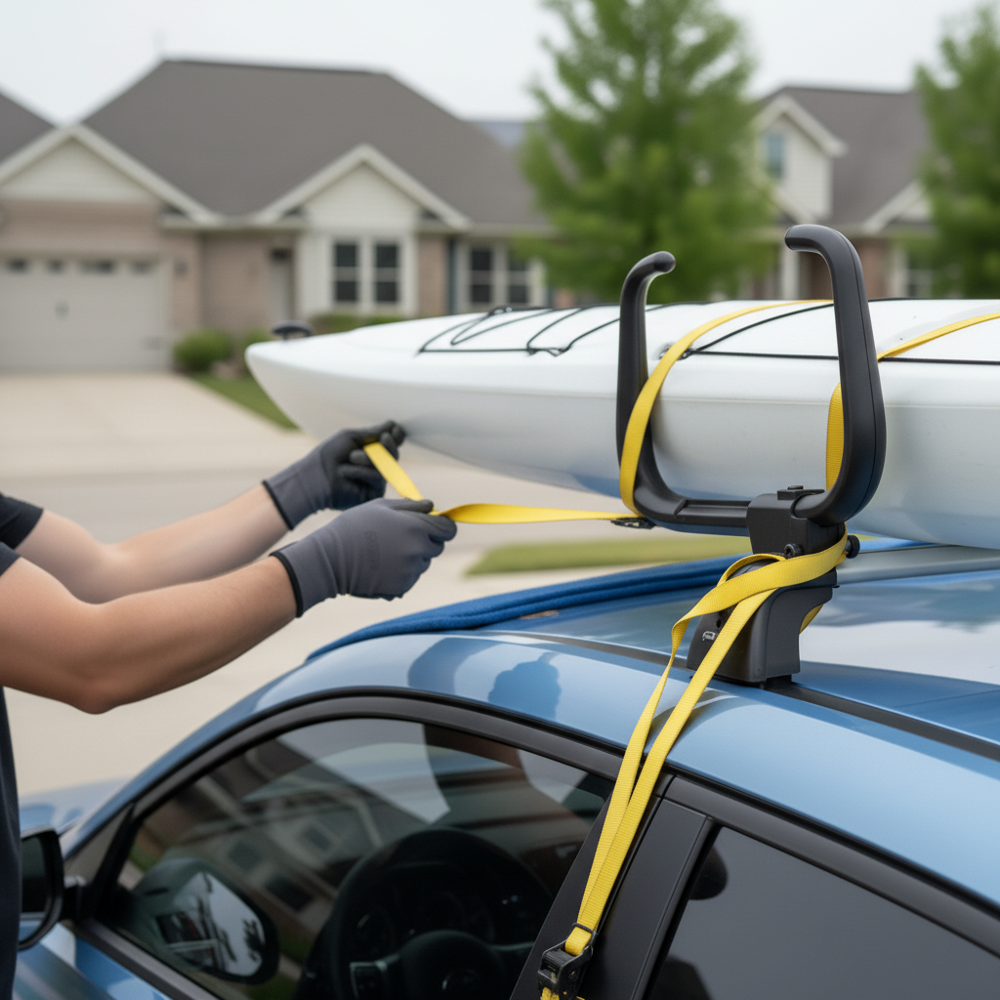
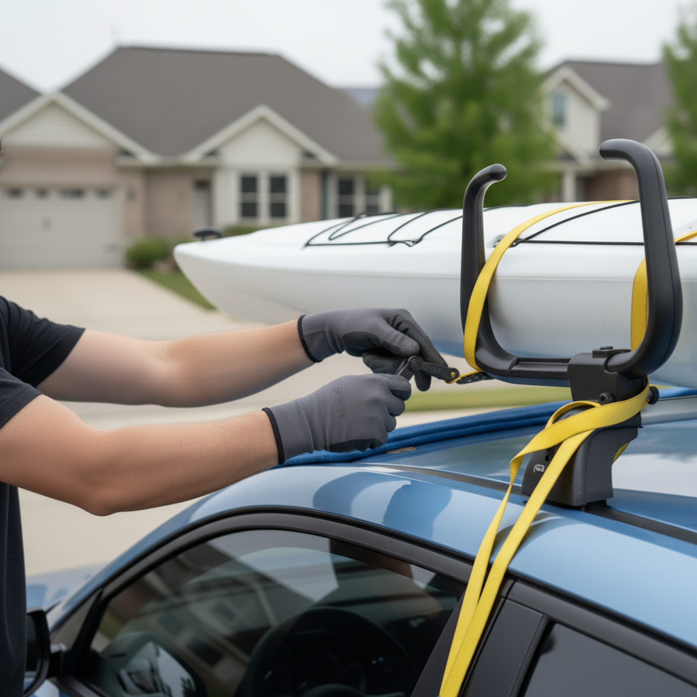
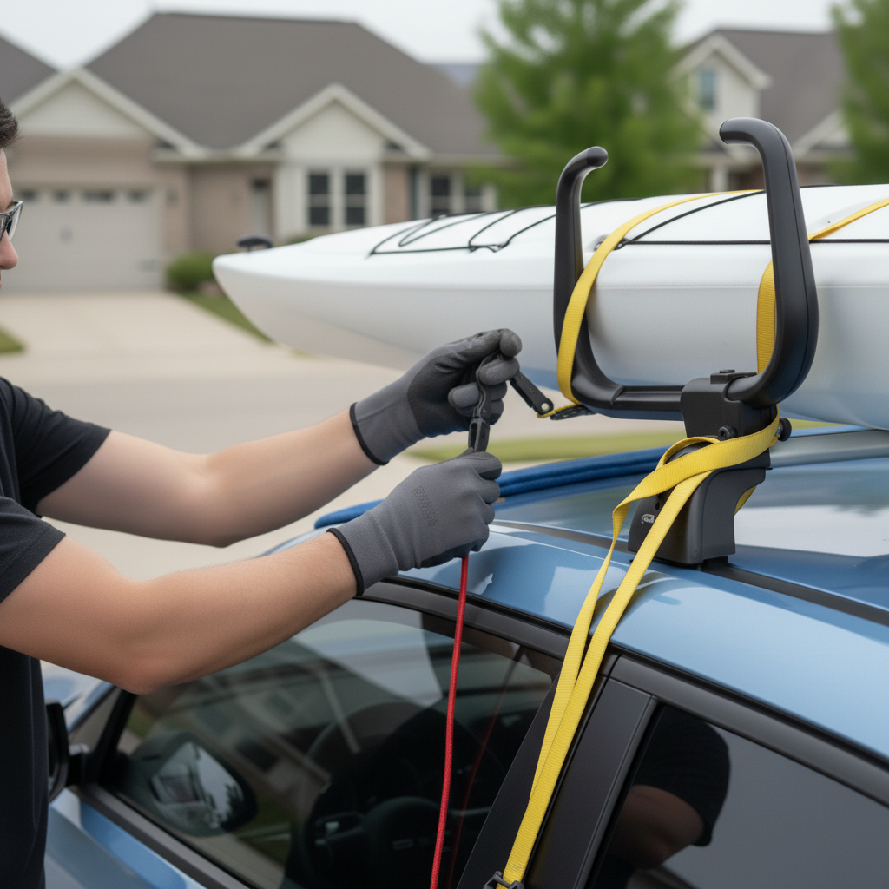
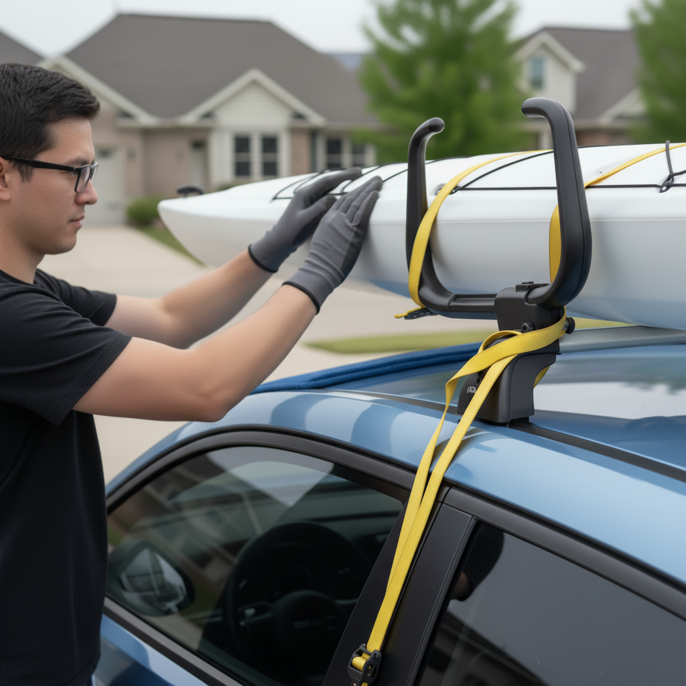

A step-by-step guide to installing a roof rack, mounting a kayak carrier, and securely fastening your kayak to the roof of your Hyundai Ioniq 5 for safe travel.
⏱️ Estimated time: 30-45 minutes
Begin by installing the roof rack system. The Ioniq 5 has fixed mounting points hidden under small plastic covers in the roof's side channels. Carefully pry these covers open. Attach the rack towers to these points according to your rack manufacturer's instructions, ensuring they are level and parallel. A typical spread between the bars is 24-30 inches. Tighten all bolts to the specified torque using the provided tool.
⏱️ Estimated time: 15 minutes
Decide where you want to position the kayak (driver's side, passenger's side, or center). Attach your kayak carrier, such as J-cradles, to the crossbars. Slide them into position and secure them loosely. Briefly place the kayak on the carrier to check for proper spacing, ensuring it rests securely in the cradles. Remove the kayak and then fully tighten the carrier's hardware.
⏱️ Estimated time: 5 minutes
Before lifting the kayak, prepare your straps. Unbuckle two cam buckle straps and drape them over the kayak carrier, one for the front and one for the rear, with the buckles hanging on the side you'll be standing on for easy access. If you're concerned about scratching the car, place a blanket or large towel over the rear of the roof and spoiler.
⏱️ Estimated time: 5-10 minutes
With a partner, stand on opposite ends of the kayak. Using your legs, lift the kayak overhead. Walk towards the car and carefully rest the edge of the kayak on the rear J-cradle or the protective blanket. Slide the kayak forward until it is centered and sitting securely in both J-cradles. If loading alone, lift one end onto the rear of the car first, then lift the other end and slide it forward.
⏱️ Estimated time: 10 minutes
Take the strap draped over the front carrier. Toss the non-buckle end under the crossbar and back up on the other side of the kayak. Feed the strap through the cam buckle. Pull the strap taut until the kayak is snug in its carrier. Do not overtighten, as this can deform a plastic kayak. The buckle should be easily accessible and not against the car's paint. Repeat for the rear strap. Secure the excess strap length by tying it off.
⏱️ Estimated time: 10 minutes
Secure the bow and stern of the kayak to the front and rear of the vehicle. Use hood anchor straps for the front; open the hood, place the loop straps inside on either side of the engine bay, and close the hood on them. Attach the bow line from the kayak's bow handle to these two points, forming a 'V'. For the stern, find a secure metal anchor point underneath the rear bumper or use a trunk anchor strap. The lines should be snug, but not overly tight.
⏱️ Estimated time: 5 minutes
Before driving, perform a thorough check. Grab the kayak and firmly shake it side-to-side and front-to-back. The kayak should move as one with the car, with no significant wiggle or play. Double-check that all buckles are secure and all excess strap material is tied down so it doesn't flap against the car. Plan to re-check all straps after the first 15-20 minutes of driving.
